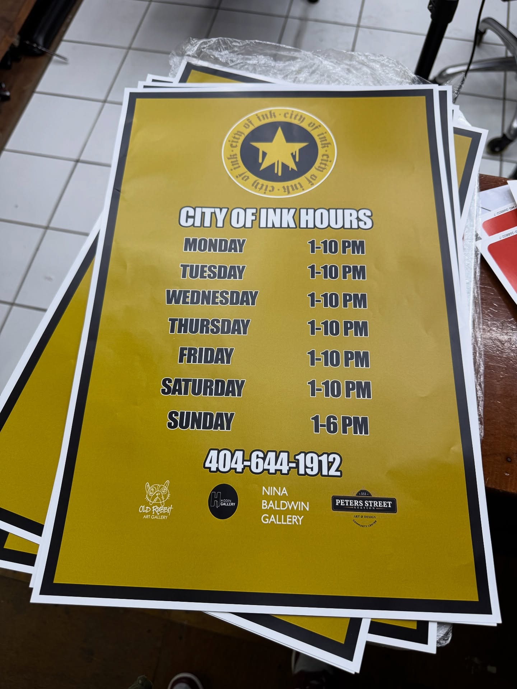
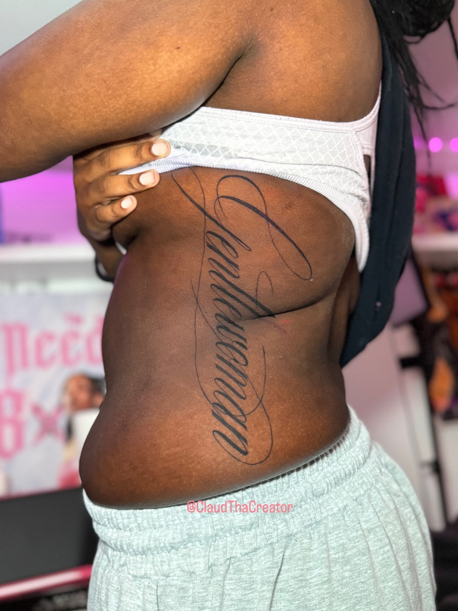
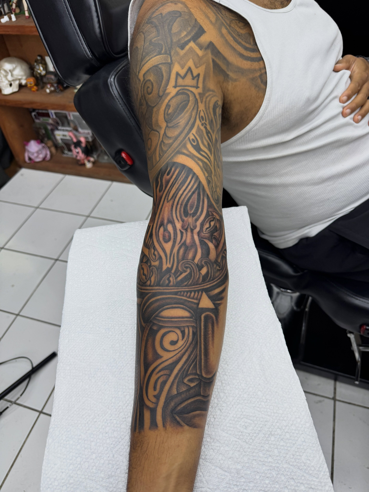
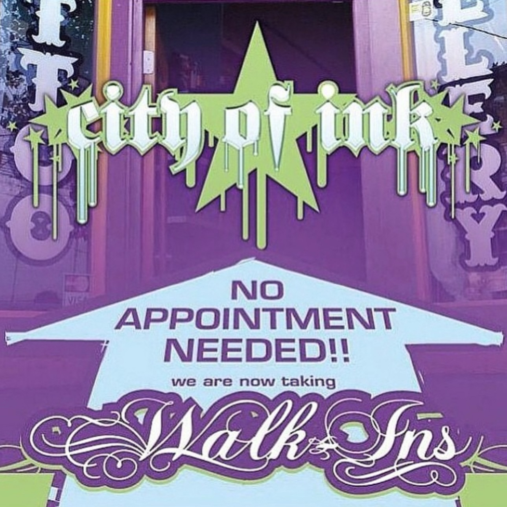

Tattoo work below is from the shop's public Instagram (@coisocialclub).

PhotoTribal half-sleeve tattoo on a client's shoulder. Tattoo work from the shop's public Instagram (@coisocialclub).

PhotoFull blackwork tribal sleeve on an arm, photographed in the shop interior. Tattoo work from the shop's public Instagram (@coisocialclub).

PhotoBlack-and-grey horse portrait tattoo close-up on a forearm. Tattoo work from the shop's public Instagram (@coisocialclub).

PhotoLarge blackwork mask-face sleeve tattoo on an upper arm. Tattoo work from the shop's public Instagram (@coisocialclub).PhotoScript lettering tattoo down a client's side and rib area. Tattoo work from the shop's public Instagram (@coisocialclub).